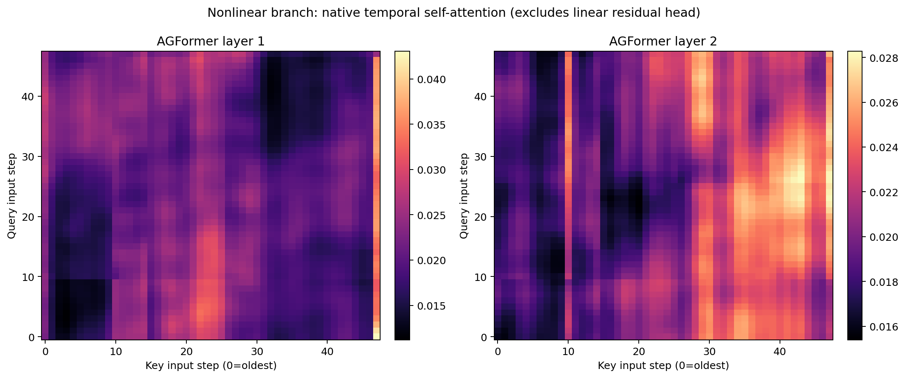
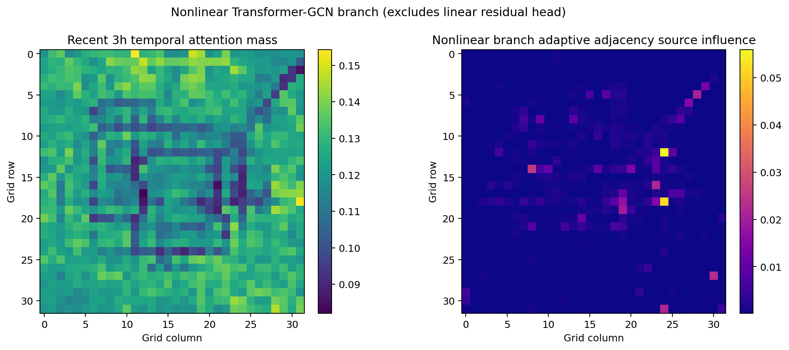
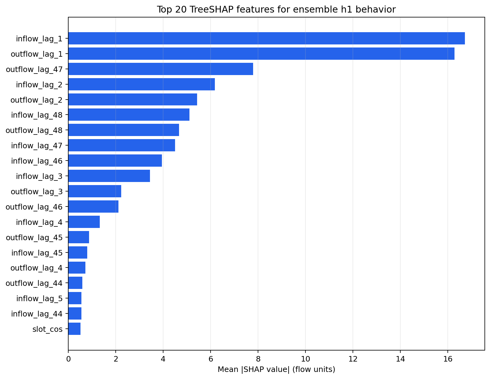
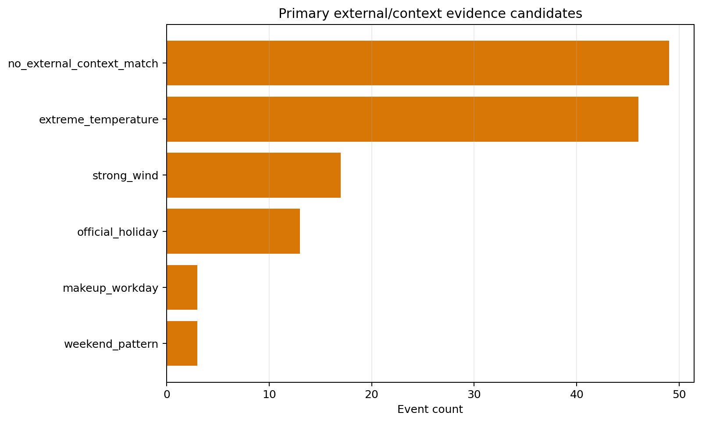
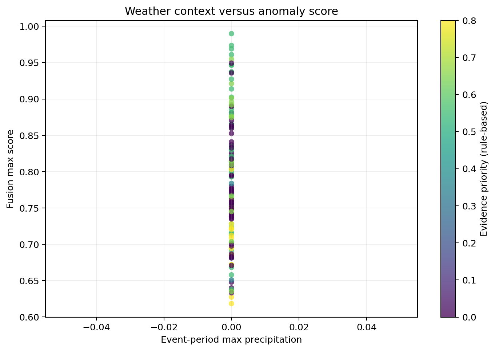

结论摘要： 跨四个 checkpoint、四个日期和各层聚合后的非线性 Transformer-GCN 平均时间注意力画像较为分散，其归一化熵为 0.9956；TreeSHAP 代理显示历史流量合计贡献占 97.43%，日历上下文占 2.33%。131 个异常事件中有 82 个找到天气或日历候选证据，49 个没有外部上下文匹配。所有结论均为模型行为或相关证据，不是因果证明。
| 分析 | 解释对象 | 方法 | 主要边界 |
|---|---|---|---|
| 时间/空间注意力 | 非线性 Transformer-GCN 分支 | 原生 head-averaged attention 与 adaptive adjacency | 不覆盖 parallel linear residual head |
| 特征重要性 | 完整四 seed ensemble 的 h1 输出 | 时间留出的 ExtraTrees 行为代理 + TreeSHAP | 解释代理近似，不是直接模型梯度 |
| 异常原因 | 131 个融合异常事件 | 天气、日历、形态和可选外部事件匹配 | 候选证据，不是校准概率或因果结论 |
模型输入规则与最终评估一致：TaxiBJ、4,022 个 gap-aware 测试窗口、48 步历史流量、7 个时间/日历通道和 33 维无泄漏静态节点特征。
注意力抽样覆盖测试集首、中、末四个日期，窗口索引为 [0, 1340, 2680, 4021]。这是一组定性覆盖样本，不是全测试集的统计估计。

最后 query 权重最高的滞后：
| layer | lag_steps | lag_hours | attention_weight |
|---|---|---|---|
| 1 | 25 | 12.5000 | 0.0298 |
| 1 | 20 | 10.0000 | 0.0280 |
| 1 | 26 | 13.0000 | 0.0277 |
| 1 | 19 | 9.5000 | 0.0276 |
| 1 | 22 | 11.0000 | 0.0271 |
| 2 | 0 | 0.0000 | 0.0264 |
| 2 | 18 | 9.0000 | 0.0263 |
| 2 | 19 | 9.5000 | 0.0258 |
| 2 | 17 | 8.5000 | 0.0253 |
| 2 | 37 | 18.5000 | 0.0242 |
接近 1 的熵说明聚合后的平均 attention profile 未集中在少数时间步；不同模型或窗口各自集中的注意力也可能在平均后呈现分散，因此不能将该结论外推到每个样本。第一层的聚合画像较关注约 9.5–13 小时前的输入，第二层同时关注最近时刻与 8.5–9.5 小时前信息。由于最终模型存在 linear residual head，不能据此断言最终预测主要由这些滞后驱动。

该图显示模型学习到了非均匀节点关系，但只覆盖 learned adaptive graph。预定义 spatial GCN 和 parallel linear residual head 是独立路径，因此这里不是完整空间贡献分解。
代理模型使用前 80% 测试窗口拟合、后 20% 时间留出验证，验证 R² 为 0.9926、MAE 为 4.4381 flow units。SHAP 平均加法误差为 0.00000413，说明 TreeSHAP 分解本身数值一致。

| importance_rank | feature | feature_group | mean_abs_shap | mean_signed_shap |
|---|---|---|---|---|
| 1 | inflow_lag_1 | inflow_history | 16.7158 | -1.1349 |
| 2 | outflow_lag_1 | outflow_history | 16.2779 | -0.1694 |
| 3 | outflow_lag_47 | outflow_history | 7.7937 | -0.0081 |
| 4 | inflow_lag_2 | inflow_history | 6.1749 | -0.2881 |
| 5 | outflow_lag_2 | outflow_history | 5.4363 | -0.3500 |
| 6 | inflow_lag_48 | inflow_history | 5.1043 | -0.1255 |
| 7 | outflow_lag_48 | outflow_history | 4.6723 | -0.1573 |
| 8 | inflow_lag_47 | inflow_history | 4.5031 | 0.0096 |
| 9 | inflow_lag_46 | inflow_history | 3.9451 | 0.0822 |
| 10 | inflow_lag_3 | inflow_history | 3.4422 | -0.0439 |
| 11 | outflow_lag_3 | outflow_history | 2.2361 | -0.1025 |
| 12 | outflow_lag_46 | outflow_history | 2.1179 | -0.1617 |
| 13 | inflow_lag_4 | inflow_history | 1.3223 | 0.0021 |
| 14 | outflow_lag_45 | outflow_history | 0.8772 | -0.0212 |
| 15 | inflow_lag_45 | inflow_history | 0.7994 | -0.1005 |
排名靠前的特征集中在最近 1–4 个半小时步和输入窗口末端的 lag 46–48，说明模型行为同时依赖短期惯性和接近前一日同一位置的历史边界信息。
| feature_group | feature_count | mean_abs_shap | importance_share |
|---|---|---|---|
| inflow_history | 48 | 44.2893 | 0.4980 |
| outflow_history | 48 | 42.3530 | 0.4763 |
| time_calendar | 7 | 2.0730 | 0.0233 |
| static_road | 5 | 0.0397 | 0.0004 |
| static_poi | 11 | 0.0395 | 0.0004 |
| static_satellite | 5 | 0.0385 | 0.0004 |
| static_geography | 4 | 0.0381 | 0.0004 |
| static_distance | 2 | 0.0238 | 0.0003 |
| static_transit_density | 3 | 0.0211 | 0.0002 |
| static_bus_routes | 1 | 0.0080 | 0.0001 |
| static_rail | 2 | 0.0060 | 0.0001 |
历史 inflow/outflow 合计占 97.43%，日历上下文占 2.33%。静态特征单组占比较小，但这不等于静态特征“无用”：代理输入压缩、门控交互以及模型对不同节点的条件化效应都会降低简单全局 mean |SHAP|。

| primary_context_candidate | primary_evidence_type | event_count | mean_max_score |
|---|---|---|---|
| no_external_context_match | none | 49 | 0.7768 |
| extreme_temperature | weather | 46 | 0.8177 |
| strong_wind | weather | 17 | 0.8032 |
| official_holiday | calendar | 13 | 0.7081 |
| makeup_workday | calendar | 3 | 0.8445 |
| weekend_pattern | calendar | 3 | 0.7054 |

event_type 只保留为检测器形态标签，不冒充现实原因。outputs/week7_interpretability/final_system_v1/，正式配置为 configs/week7_interpretability.yaml。